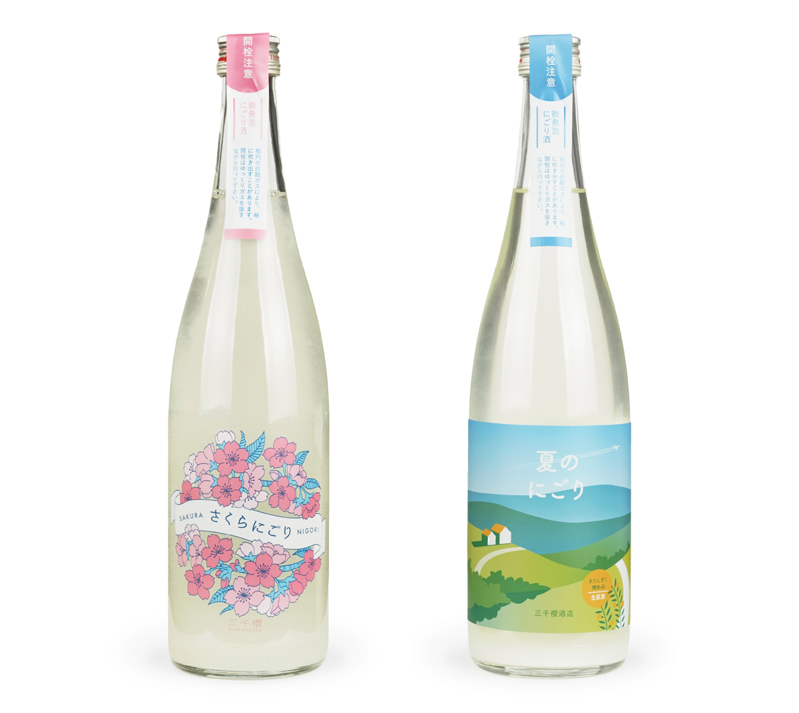

さくらにごり / 夏のにごり
三千櫻酒造株式会社
ラベル / イラスト
2019. 01 ~

ラベル / イラスト
2019. 01 ~
三千櫻酒造が、毎年春と夏に販売する微発泡にごり酒のラベルデザインのリニューアル。軽やかな甘みのある口当たりが人気であったため、さらに販路を拡大すべく「女性に手に取ってもらえるものを」というご依頼で制作しました。また、開栓注意のラベルも色味を合わせて制作し、瓶首に配置しました。
さくらにごり：親しみやすい雰囲気の手描き調の桜のイラストを描画し、果実感のある香りを感じられるような可愛らしい印象でまとめました。
夏のにごり：北海道の広い大地と青空を配置したいというご依頼のもと、すっきりとした飲み口を感じられるようなシンプルな線を使ったイラストで描画しました。
＜ BACK
© Moeri Ito